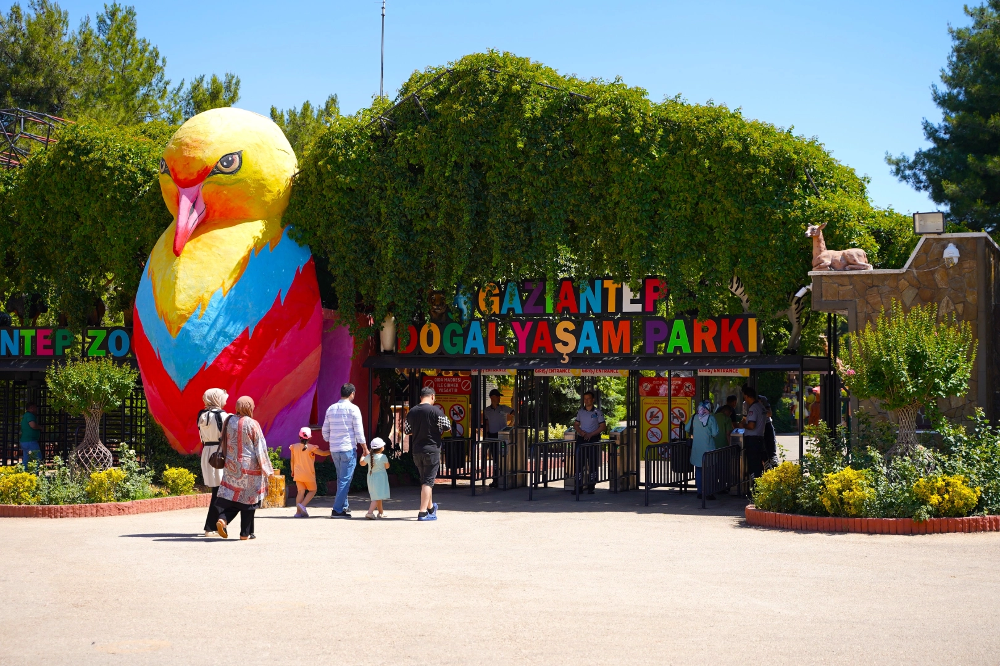

Kuruluş ve Tarihçe
2001 yılında Gaziantep Büyükşehir Belediyesi tarafından Burç Ormanı içinde kurulan Gaziantep Hayvanat Bahçesi, Türkiye’nin en büyük, dünyanın ise dördüncü büyük doğal yaşam parkı olarak hizmet vermektedir. Kurulduğu günden bu yana doğayı koruma, hayvan türlerini tanıtma ve ziyaretçilere eğitici bir deneyim sunma misyonuyla faaliyet göstermektedir.